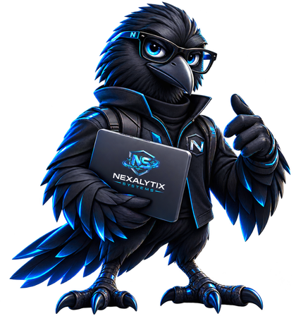

Home / Sobre / Nexalytix Systems
Sobre a Nexalytix Systems
Conectamos tecnologia, inteligência e resultado de negócio
Consultoria de alta performance em soluções de tecnologia, combinando Cloud, FinOps, Segurança, DevOps e Discovery & Transformation Intelligence — para CIOs, CTOs e times que não podem errar na priorização.
Nexalytix Systems é o nome institucional por trás da Nexalytix — a mesma equipe e a mesma responsabilidade de execução, com uma identidade própria para representar essa frente de consultoria e tecnologia.

Esse é o nosso mascote — desenhado nas cores da marca para deixar a Nexalytix Systems mais próxima de quem trabalha com a gente no dia a dia.
Como pensamos
Diagnóstico antes de ferramenta
Não vendemos tecnologia por tecnologia. Cada projeto começa entendendo o que trava a operação, o que custa caro e o que gera risco — a solução técnica vem depois, como consequência do diagnóstico, não como ponto de partida.
Isso vale tanto para os projetos que fazemos para clientes quanto para os produtos que desenvolvemos internamente: o Nexalytix Ecosystem nasceu de problemas reais encontrados em projetos, não de uma lista de funcionalidades definida em escritório.
Nossos pilares
Onde concentramos profundidade técnica
Cloud
FinOps
Segurança
DevOps
Discovery & Transformation Intelligence
Público-alvo
Para quem a Nexalytix Systems faz mais sentido
- CIOs
- CTOs
- Heads de Transformação Digital
- Sócios de consultorias
- Médias e grandes empresas
Diferenciais
Resultado que a gente mede
40%
economia média em FinOps
99,99%
uptime
500+
deploys por dia
15 min
MTTR
Segurança e confiança
Padrões que seguimos, parceiros em quem confiamos
Não recomendamos uma ferramenta que não testaríamos internamente antes. A proteção de dados, backup e continuidade de negócio segue os mesmos padrões que aplicamos para nós.
Parceiros de tecnologia
Certificações
Tratamos dados de clientes e leads em conformidade com a Lei Geral de Proteção de Dados (LGPD). Veja nossa Política de Privacidade.
Nosso ecossistema
Soluções e apps que já fazem parte da operação
Base MVP hoje, com novos apps a caminho.
Finance
CRM
BG Check
Growth
Transcrição
ChatBot
Maturidade e Assessment
ERP
PMO e PO Inteligente
Metodologia
Nexalytix ERP Assessment
Módulos avaliados
- Cadastro
- Financeira
- Fiscal e Contábil
- Compras/Fornecedores
- Estoque
- Vendas/Atendimento
- Preços/Produtos
- Clientes/Marketing
- Integrações
Resultado
Score de maturidade, com recomendações de arquitetura e infraestrutura priorizadas por impacto e esforço.
Metodologia
Design Thinking combinado com 5W2H, para transformar diagnóstico em plano de ação claro.
Grupo Vieira Prime · Arrasta para Cima
Fazemos parte de coisas maiores que a gente
A Nexalytix é a frente de tecnologia, estratégia e IA do Grupo Vieira Prime. E somos Embaixadores do método Arrasta para Cima — um reconhecimento pela disciplina de diagnóstico e priorização que aplicamos internamente, a mesma que levamos para os projetos dos nossos clientes.
- Estratégia, IA e tecnologia para pequenas e médias empresas
- Produtos próprios nascidos de projetos reais de clientes
- Parte do Grupo Vieira Prime
- Embaixadores do método Arrasta para Cima
Mais que tecnologia, parceiro no seu próximo nível
Fale com o time e entenda como a Nexalytix Systems pode acelerar sua próxima etapa de transformação.